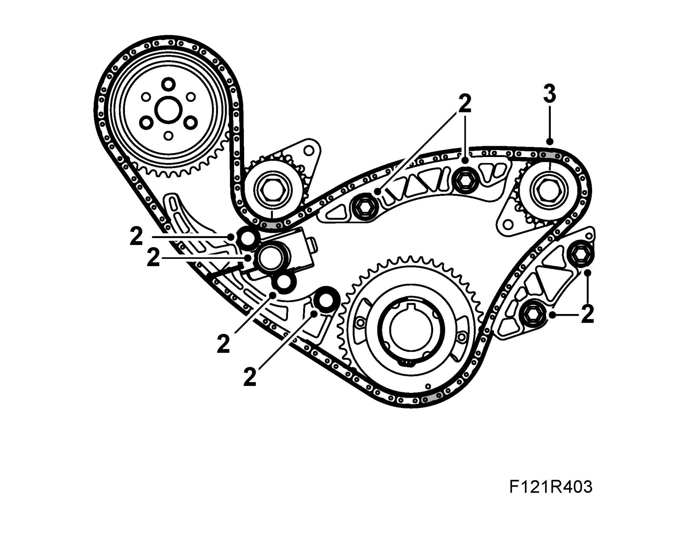
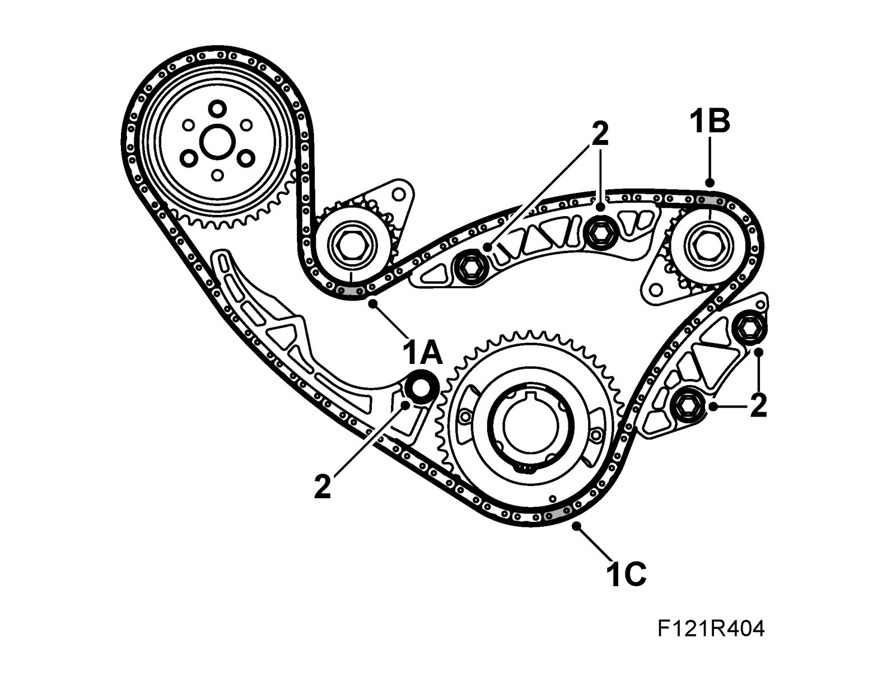
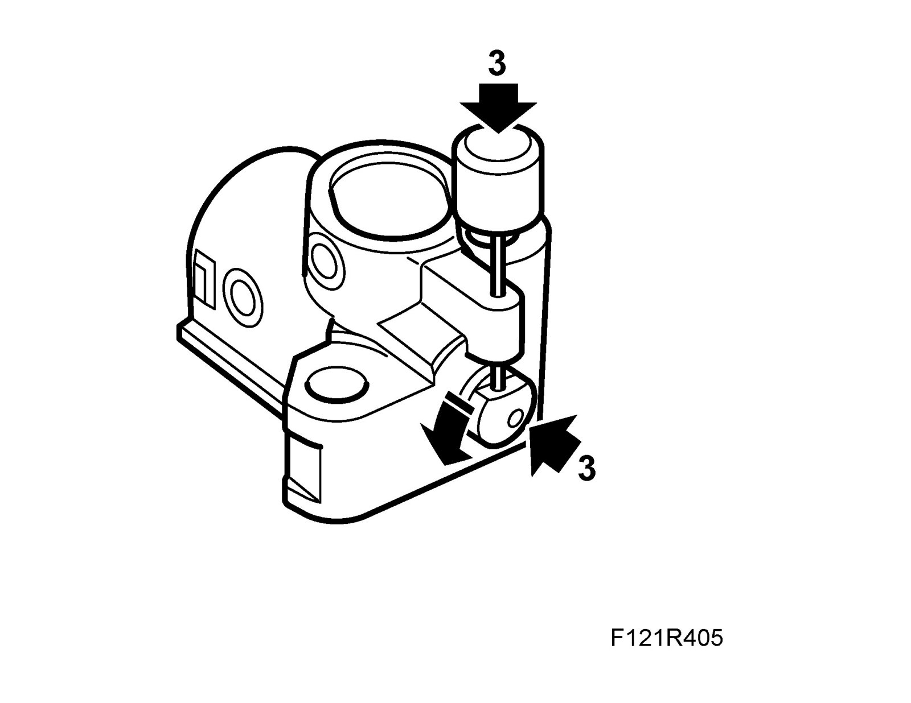
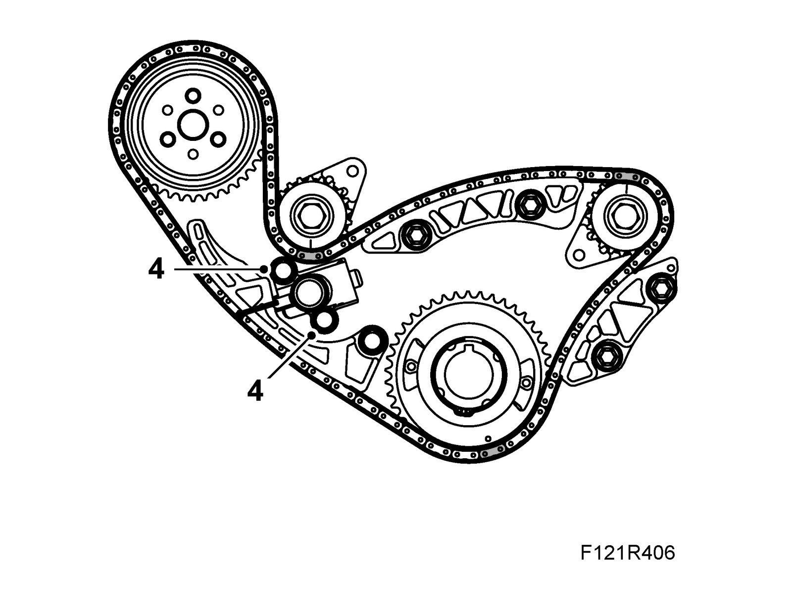

Balancer Shaft Chain
Balancer shaft chainTo remove
1. Remove Timing chain and camshaft sprocket.
2. Remove the chain tensioner and chain guide rails.

3. Remove the chain.
To fit
Important
The colour markings on the balancer shaft chain must correspond with the markings on the gears.
1. Fit the chain. Start fitting on the water pump pinion. Continue as follows:
1.A. The silver-colored link must be fitted to the exhaust side balancer shaft sprocket.

1.B. The copper-colored link must be fitted to the intake side balancer shaft sprocket.
1.C. The silver-colored link must be fitted to crankshaft sprocket.
2. Fit the chain guide rails. Use 74 96 268 Thread locking adhesive.
Tightening torque 10 Nm (7 lbf ft)
3. Fit the chain tensioner. Load the tensioner by pressing in the plunger and turning to the right. Fit the chain tensioner and secure with tool 83 96 392 Lock pin.

4. Fit the chain tensioner screws. Use 74 96 268 Thread locking adhesive.
Tightening torque 10 Nm (7 lbf ft)

5. Remove the tool from the tensioner. Press the tensioner guide rail to check that backward movement of the plunger is prevented.
6. Fit Timing chain and camshaft sprocket.